In most energy storage systems, people are already used to the configuration of battery + PCS. The PCS is clearly responsible for converting DC power into AC power, and at the same time undertakes functions such as control and power quality regulation. But now, manufacturers have changed their approach. Can these functions also be accomplished without relying on PCS?
The approach is changing from "centralized transformation" to "distributed implementation".
This technological approach itself is not entirely new, but it is actually quite rare to see it applied to industrial and commercial energy storage scenarios. Its core idea is to disassemble the "current conversion" process from a separate device and integrate it into the battery system.
Simply put, it doesn't use PCS to perform DC/AC conversion, but rather:
- Allowing the battery cell to directly participate in the output structure
- Cascaded control via switching devices
- The superposition forms a waveform close to a sine wave.
- After filtering, the AC power is directly output
This can be understood as a shift from one device completing the transformation to the entire system completing the transformation together.
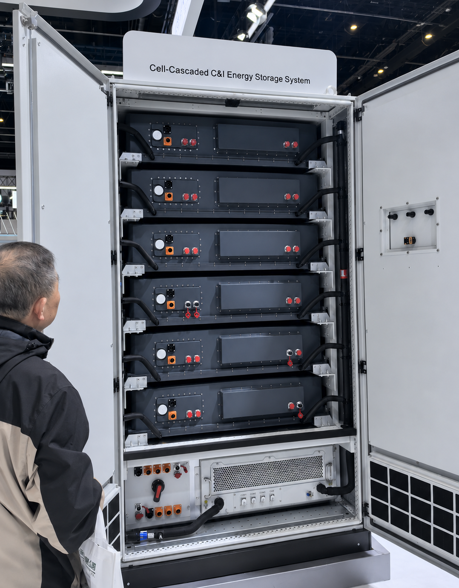
The Change is not just about losing a piece of equipment.
If it's just "one less PCS", then it's not very significant. What's more noteworthy is the chain of changes it brings.
Energy pathways are compressed: Traditional energy storage systems are essentially multi-stage energy conversion and superposition. Now, the energy transmission links have been significantly shortened. Reducing the number of conversions decreases losses and makes the control path more direct.
Low-load conditions may actually be better: In actual projects, PCS is prone to problems with unsatisfactory harmonic control when running under low load, which is a common pain point in the industry. The advantage of this cascaded cell structure is that it is easier to control the output waveform when operating at low power.
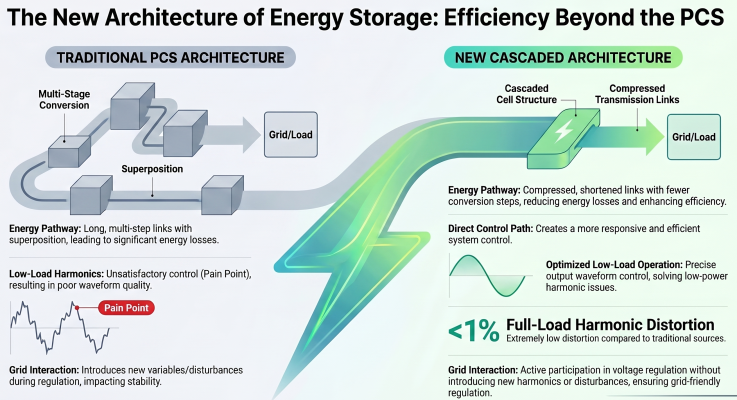
If this is consistently demonstrated in actual operation, it will be of great practical significance for industrial and commercial scenarios, because many industrial and commercial storage systems are not operating at full load for a significant amount of time.
The data obtained on-site shows that the full-load harmonic distortion is <1%.
On the distribution side, it might be more friendly: One type of application uses energy storage for power quality management, but the problem is that the PCS itself is also a "power electronic source", which sometimes introduces new harmonics or disturbances.
This new architecture, in theory, can participate in regulation rather than introducing additional variables. In scenarios such as distribution area and voltage regulation, this architecture may be more advantageous than the traditional PCS solution and may even avoid the problem of "intending to control but instead introducing harmonics".
Increased complexity is an unavoidable problem
Of course, this approach comes at a cost. The biggest change is that system complexity has shifted from the device side to the structural side. The shift from a single PCS to a system involving a large number of battery cells in control inevitably leads to more complex control strategies, a greater number of components, and an increase in potential failure points.
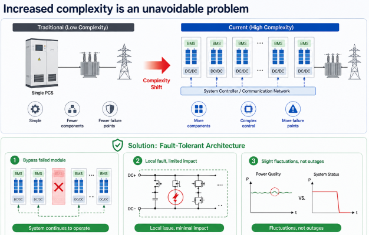
Solution Approach
The design approach we see now is moving towards a fault-tolerant architecture:
- Supports partial module bypass; if one or two units fail, the fault can be bypassed directly.
- A problem with a local MOSFET has little impact on the overall system.
- This is more often manifested as slight fluctuations in power quality than system outages.
In other words, this is an attempt to use "fault-tolerant design" to hedge against the risks brought about by structural complexity.
The Rise of the Integrated Platform
The response from manufacturers has been the rise of the all-in-one integrated C&I BESS platform — systems in which the PCS function, BMS, EMS, MPPT solar input, on/off-grid switching, thermal management, and fire protection are all engineered together in a single pre-tested enclosure.
Sungrow PowerStack 255CS is a strong example. Launched at the Global Renewable Energy Summit in 2025 and subsequently unveiled at RE+ 2025 and the World Future Energy Summit 2026, it integrates a full PCS with a three-phase design, BMS, and EMS into a unified liquid-cooled enclosure. The goal, according to Sungrow, is to "significantly improve installation and operation" while supporting grid-forming technology and 100% unbalanced load capability without external transformers.
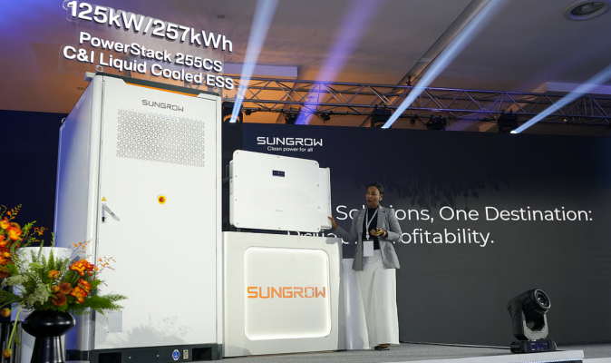
Solis has taken a similar direction with its 125 kW C&I hybrid inverter, described as providing "4-in-1 functionality" — integrating PCS charge/discharge management, on-grid/off-grid switching, MPPT solar input, and EMS into a single unified control system, pre-integrated and tested at the factory.
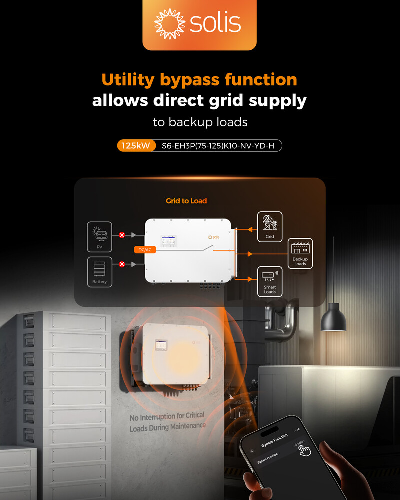
SAJ Electric's CHS2 and CM2 platforms consolidate battery packs, PCS, BMS, EMS, temperature control, fire protection, power distribution, and monitoring within a single all-in-one system.
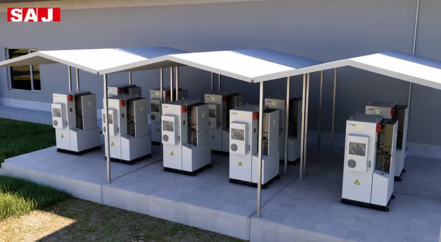
Deye New Energy has launched a PCS + BOS-B integrated system specifically for C&I solar-plus-storage applications, using 14.3 kWh LFP battery modules with up to 15 packs per PCS in a unified platform.
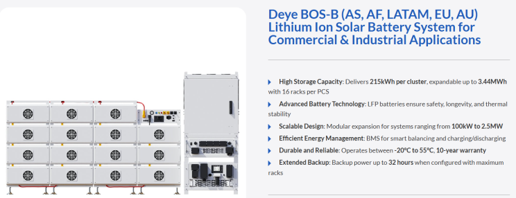
SolarEast BESS all-in-one C&I cabinets (100 kWh to 522 kWh) go further still — their flagship 522 kWh cabinet integrates Grade A LiFePO4 cells, smart BMS, PCS, EMS, and multi-level fire protection in one IP55 outdoor enclosure, with the product positioning explicitly stating "no sub-system integration required on site".
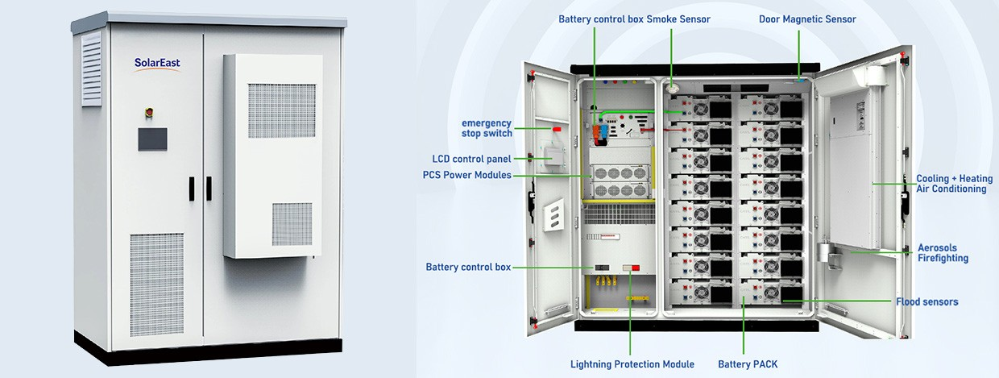
Why the Trend Is Accelerating Now
Several converging forces are pushing C&I buyers toward integrated architectures and away from standalone PCS configurations:
1. Cost Pressure on Balance-of-System
In early 2026, core BESS hardware pricing for large C&I orders falls in the range of €140–200/kWh, but the cost share of PCS, EMS, protection relays, and commissioning testing "is rising" relative to falling cell prices. Integrating the PCS eliminates a separate procurement and integration layer, reducing BOS costs and installation complexity. All-in-one platforms ship pre-assembled and pre-tested, enabling site commissioning in under 8 hours for some product lines.
2. EMS and Smart Dispatch as a Competitive Differentiator
C&I buyers in 2026 are asking for systems where the EMS can "react to tariffs, site load, solar output, weather, and state of charge without constant manual intervention". When the EMS is externally sourced and separately integrated with a standalone PCS, achieving this level of intelligence requires complex interfacing between components from potentially different manufacturers. An integrated platform resolves this with a factory-tested control layer across all subsystems.
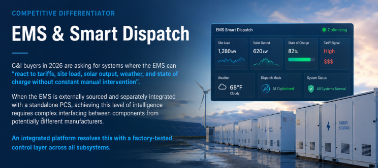
3. Safety and Reliability as Boardroom Topics
The Indian BESS market summary by Delta Electronics' Business Group Head describes the shift explicitly: industry is moving toward "fully integrated BESS — combining PCS, EMS, BMS, fire safety, thermal management, and communication in one engineered system rather than stitched-together components".
4. The Solar-Plus-Storage Default
C&I standalone storage — without solar integration — is increasingly uncompetitive. As one market analysis noted, "the integrated solar + BESS model is more than 30% more economical than standalone storage alone," and standalone storage without PV "delivers neither cost reduction nor carbon reduction". When solar is standard, the hybrid inverter architecture that absorbs PCS function makes more engineering and economic sense than maintaining a separate PCS.
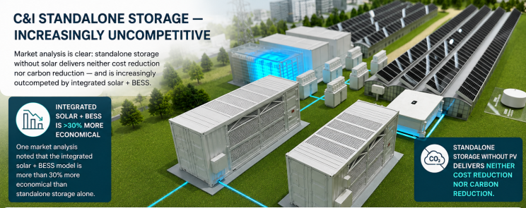
5. Installation Speed and O&M Simplicity
For C&I projects with payback periods of 2–5 years, minimizing installation cost and maximizing system uptime matter enormously. Integrated platforms that reduce on-site wiring, eliminate inter-component compatibility risks, and simplify spare-parts management directly improve project economics.
The Four PCS Technology Families and Their C&I Trajectories
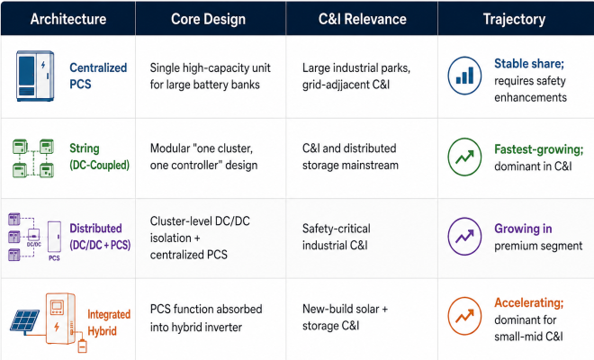
The India Context
Industry voices at events like the Mercom India RE Buyer-Seller Meet in April 2026 confirmed that "the highest in demand are the hybrid inverters. They can be integrated with multiple sources: solar, grid, and battery storage; they can even be connected with diesel gensets," with hybrid systems "gradually replacing conventional grid-tied solutions".
The economics in India are compelling: a battery system at ₹50,000/kWh can achieve a payback of approximately four years by displacing ₹12.5/unit ToD grid tariffs with solar-charged storage at ₹2.5/unit. At those economics, the simplest, most reliable, lowest-BOS-cost architecture wins — which points squarely toward integrated platforms.
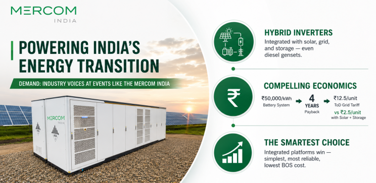
Cummins' all-in-one containerized BESS launch in India — with capacities from 211 kWh to 2,280 kWh, each unit including the battery, PCS, isolation transformers, cooling, fire safety, and site-level controls in a single container — illustrates how leading global manufacturers are packaging the India C&I proposition.
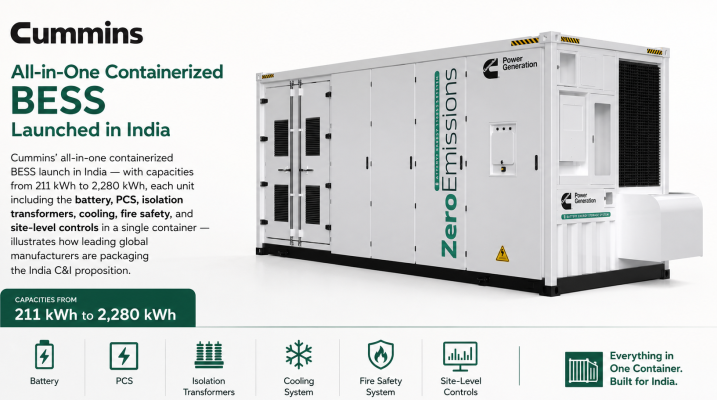
At Last
This attempt at cell cascading is actually answering a more fundamental question: Does an energy storage system necessarily have to be designed around PCS?
In the short term, this type of solution is unlikely to completely replace the mainstream architecture. However, it at least opens up a new possibility— moving from "equipment standardization" to "architectural differentiation." For example, it may first prove effective in certain specific scenarios, such as those with higher power quality requirements and industrial and commercial systems with large load fluctuations.
From the perspective of the energy storage industry, the real barrier may not lie entirely in "what to sell," but in something else entirely: whether or not one has the capability and energy to continuously invest in technologies that don't show immediate returns.
The significance of this type of "cell cascading" solution goes beyond the product itself. It may not immediately bring scale or obvious benefits in the short term, but it shows us that there are still people trying to break out of the existing path.
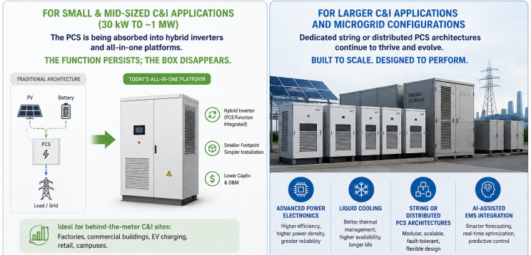
Reading the Architecture Shift Correctly
It would be inaccurate to frame this as "the PCS is being discarded." The PCS function — bidirectional AC/DC conversion, grid interaction, reactive power management, protection coordination — is as critical as ever. What is changing is where that function lives in the system architecture.
For small and mid-sized C&I applications (30 kW to ~1 MW), the PCS is being absorbed into hybrid inverters and all-in-one platforms. The function persists; the box disappears. For larger C&I applications and microgrid configurations, dedicated string or distributed PCS architectures continue to thrive and evolve — with increasingly sophisticated power electronics, liquid cooling, and AI-assisted EMS integration.
The industry is not discarding the PCS. It is internalizing it — collapsing the boundary between the power conversion layer, the control layer, and the storage layer into systems that are simpler to deploy, safer to operate, and more economical to commission and maintain.
Conclusion
The commercial and industrial energy storage sector is not discarding the PCS — it is evolving past the era when the PCS needed to be a separate, independently sourced and integrated box. The direction is clear: for the growing mass market of C&I deployments below 1 MW, hybrid inverter architectures absorbing the PCS function are becoming the default. Pre-integrated, pre-tested, plug-and-play platforms reduce cost, simplify deployment, and make multi-layer safety management tractable at scale.
The future of C&I energy storage is not a BESS with a PCS. It is a BESS that is the PCS.